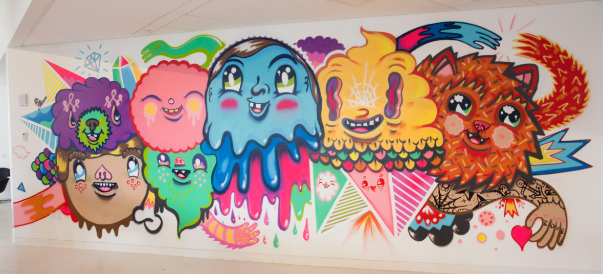

About This
Hello, and welcome to "Graffiti in New York City "a site where we inform you about graffiti in the 5 broughs of New York City. Graffiti tells you how
a community feels about about certain events that occur. It tells you a little bit of the community's history, and maybe even what the community
thinks what will happen to itself.

Arnoldnyc Mural, NYC
Graffiti is a type of art and art expresses who you are. They can be found in urban areas. NYC, with its 5 boroughs has tons of urban areas. Having
graffiti can help express how the community feels and the importance of our community.
About Me
I am a 10th grader and a junior devolper who loves art and technology.
When I was young, I wanted to be an artist. I was fascinated by how cartoons work. My parents gave me all these sketchbooks to help me with my dream. Day after day, I would just be in my room drawing Pokemon and stuff.
Every field trip we went to in elementary school was about art and history. I loved that I was expose to this. They had this basic type of art that I drew. I thought, maybe if I draw stuff like that, my work can be shown on here too. In the end, I never asked to submit my work because I was shy.
Art in museums are meant to be more professional work and tells a story, but grafitti tends to be more expressive and interpretative. Self portraits of people and events, and the museum tells you exactly what it is. Graffiti discusses events as well, but it's always someone else's opinion. One has to interpret.
I made this website to help people understand the importance of art.